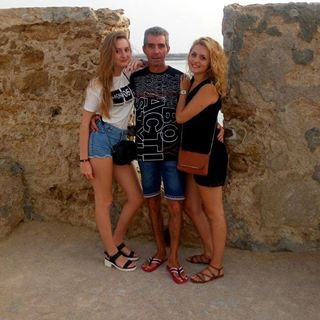

Photo: Eropean NEWS
Photo: Eropean NEWS
Za posledních 20 let se počet lidí trpících onemocněním kloubů téměř zdvojnásobil a průměrný věk postižených tímto onemocněním se snížil na 24. Vinou tomu je – sedavý životní styl moderních lidí, kouření, vysoká úroveň stresu a špatná výživa. Artritida je vážné onemocnění , které může člověku za několik let způsobit- zdravotní postižení. Jak se zachránit před invalidním vozíkem a vyléčit kloubní nemoc navždy?

Příznaky artritidy
Artritida má řadu příznaků:
- Křoupání v kloubech
- Pohybové problémy
- Bolesti kostí
- Nápětí
- Bolestivé pocity při změně počasí
- Pocit nevolnosti
- Celková slabost těla
- Otok v kloubech

Artritida: co to je?
Mechanismus artritidy je relativně jednoduchý a byl dlouho zkoumán. Nemoc se často vyskytuje, když do těla vstupují patogenní mikroorganismy. V tomto případě se spouští imunitní reakce, která potlačuje infekce. V důsledku selhání imunitního systému, jako cizí buňka se bere i vlastní chrupavka.

Pomohou inovace?
V březnu roku 2019 vědci z japonské univerzity v Osace veřejně prohlásili o vynálezu nového způsobu léčby artritidy - imunoterapii. Imunoterapie pomáhá tělu bojovat pouze s infekcí, aniž by se zničili klouby. Bohužel není tato léčba vhodná pro každého. Stojí to hodně peněz a Ne vždy to přináší výsledky. Existuje další vážná nevýhoda imunoterapie: pokud vám to nevyhovuje, může se kloubní tkáň úplné zničít. Mnoho lidí s artrózou bylo kvůli imunoterapii postiženo. Jejich tělo to prostě nechtělo vnímat.
Alternativní imunoterapie
Bolest nelze ignorovat: artritida sama nezmizí. Postupem času se nemoc vyvíjí a léči se hůř, než v raných stádiích. Navíc je nemožné snášet tuto strašnou bolest- zabrání vám užívat si života, práce a zhorší se i kvalita spánku.
Bolest pak nejde ignorovat: artritida sama nezmizí. Postupem času se ta nemoc vyvíjí a léči se hůř, než v začatečných stádiích. Navíc je nemožné snášet tuto strašnou bolest- zabrání vám to užívat si života, práce a zhorší se i kvalita spánku.
Světová zdravotnická organizace (WHO) v rámci projektu- «Zdravý život», vyvinula spolu s lékaři z Japonska inovativní lék na artritidu. Tento nástroj blokuje agresivní reakce těla na klouby, anestetizuje a nepoškozuje zdraví.
Před několika měsíci se tato novinka objevila na regálech lékáren, ale jiní výrobci ji začali nahrazovat: tento nástroj je levnější a efektivnější a může snížit prodej dalších léků na klouby.
Ale, nehledě na to, projekt prodeje tohoto přípravku byl znovu spuštěn, personál byl doplněn a rozhodl se prodat drogu přes internet, aby lidé již nestáli ve frontách v lékárnách.

Léčení artritidy bez následků
je dnes jediným nástrojem, který dokáže zastavit zánětlivé procesy v kloubech a anestetizovat bez vedlejších účinků.
Kapsle mají příznivý účinek na klouby, zmírňují otoky a bolest. V jejich složení je konopný olej, který má pro tělo léčivou vlastnost díky alkoxyglyceridům, které obsahuje . Poskytují energetickou stimulaci těla, podporují hojení kostí. S pomocí vitamínů B a A, omega 3-6-9, které jsou obsaženy v konopném oleji, lék pomáhá zmírnit příznaky artritidy a cítit se mnohem lépe.
K dosažení co nejlepšího účinku je třeba používát několikrát denně a zapojit se do lehké fyzické aktivity. Musíte chodit na čerstvý vzduch, plavat, cvíčit aerobik nebo tancovat, jak chcete a co chcete. Vědci tvrdějí, že právě tento lék se může stát hlavním léčením artritidy.

je dnes jedním z nejlepších léků na léčbu artritidy. se vyrábí pouze v Japonsku, ale lékaři plánují prodej přípravků po celém světě. Než se to tak nestalo, doktoři budou prodávat ten lék dvakrát levněji, než se plánovalo. Ale, pokud se to bude prodávat po celém světě, pak logicky cena bude výrazně vyšší. Doktoři nebudou moci poskytnout globální zásoby, pokud i nadále budou prodávat tak levně, jednoduše se rozpadnou. Zbývá jen velmi málo času na to, aby si mohli koupit za rekordně nízkou cenu.


Komentáře:
Nedávno jsem si objednal a doslova za pár dní jsem obdržel balík! Ani expresní poštou to nepřijde tak rychle! Díky!
Vážně? Jen piješ kapsle a tak? A problémy nebudou?
Karolino, faktem je, že pomáhá i v těch nejhorších případech. Lék dobře léčí a uzdravuje. Je to mnohem lepší než tuna pilulek, injekcí a kapátků. Zkuste to, by určitě měl pomoct- říkám vám to jako specialista!
Líbilo se mi . Určitě si objednám toho přípravku navíc!
Ņēmu priekš mammas. Viņa līdz cēlās slikti: viņai uzpūtās locītavas un āda ap tām bija karsta. Kā viņa mocījās! Tiklīdz sākām lietot , mamma vispār aizmirsa, cik viņai gadu. Kājas nesāp, rokas kārtībā, nodarbojas ar savu iemīļoto piemājas dārziņu un mazbērniem! Un viņai jau ir 80!
Skvělý článek!
Jíž po prvním použití jsem mohla chodit! Každý, kdo si myslí, že tento lék je blbost- hodně ztratí, to vím přesně!
Kamila Bartáková
Zajímavé. Určitě to vyzkouším
Nevěříte všemu, pomoci jsem zvládla i porodit dítě!)) Obávala jsem se, že bolesti v kloubech by komplikovaly mé těhotenství, a proto jsem se nemohla rozhodnout mít dítě, ale čas plynul. Zkusila jsem všechno: hormonální léky, injekce a různé léky, nic mi nepomáhalo! A pak kamarádká doporučila lék a už doslova po prvním použití jsem se začala cítit lépe a už za měsíc jsme čekali na ditě)) Teď bude malý odpočinek a určitě bych do toho šla i podruhý, pokud to dovolí zdraví!
Ano, děti jsou štěstí a vnoučata - štěstí dvojnásobné! Nyní moje děti nechávají vnoučata na díl a já jen mám radost. Po si cítím, ne jako babička, ale mladá máma
Zkusím to koupit pro maminku, doufám, že to pomůže
 Karel Zápotocký
Jsem rád, že jsem začal žít normální žívot bez bolesti! Děkuji! Plánuji lyžovat se svými dcerami v zimě, než jsem se bál přemýšlet o fyzické aktivitě, ale tady jsem měl štěstí s